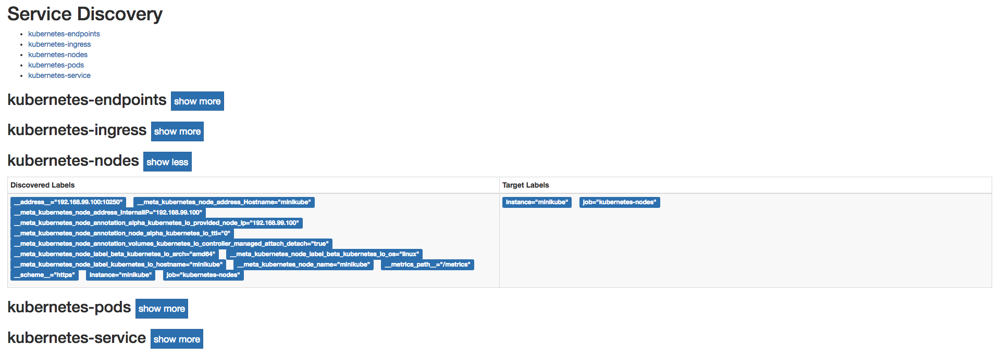
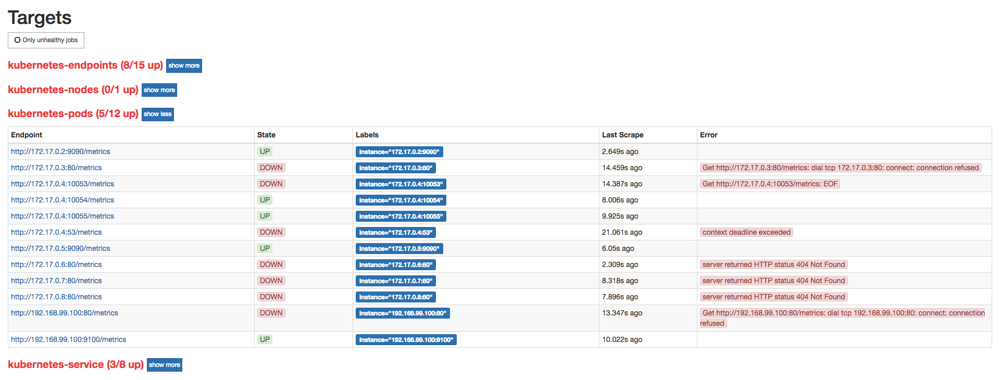

Kubernetes下的服务发现
目前为止，我们已经能够在Kubernetes下部署一个简单的Prometheus实例，不过当前来说它并不能发挥其监控系统的作用，除了Prometheus，暂时没有任何的监控采集目标。在第7章中，我们介绍了Prometheus的服务发现能力，它能够与通过与“中间代理人“的交互，从而动态的获取需要监控的目标实例。而在Kubernetes下Prometheus就是需要与Kubernetes的API进行交互，从而能够动态的发现Kubernetes中部署的所有可监控的目标资源。
Kubernetes的访问授权
为了能够让Prometheus能够访问收到认证保护的Kubernetes API，我们首先需要做的是，对Prometheus进行访问授权。在Kubernetes中主要使用基于角色的访问控制模型(Role-Based Access Control)，用于管理Kubernetes下资源访问权限。首先我们需要在Kubernetes下定义角色（ClusterRole），并且为该角色赋予响应的访问权限。同时创建Prometheus所使用的账号（ServiceAccount），最后则是将该账号与角色进行绑定（ClusterRoleBinding）。这些所有的操作在Kubernetes同样被视为是一系列的资源，可以通过YAML文件进行描述并创建，这里创建prometheus-rbac-setup.yml文件，并写入以下内容：
apiVersion: rbac.authorization.k8s.io/v1beta1
kind: ClusterRole
metadata:
name: prometheus
rules:
- apiGroups: [""]
resources:
- nodes
- nodes/proxy
- services
- endpoints
- pods
verbs: ["get", "list", "watch"]
- apiGroups:
- extensions
resources:
- ingresses
verbs: ["get", "list", "watch"]
- nonResourceURLs: ["/metrics"]
verbs: ["get"]
---
apiVersion: v1
kind: ServiceAccount
metadata:
name: prometheus
namespace: default
---
apiVersion: rbac.authorization.k8s.io/v1beta1
kind: ClusterRoleBinding
metadata:
name: prometheus
roleRef:
apiGroup: rbac.authorization.k8s.io
kind: ClusterRole
name: prometheus
subjects:
- kind: ServiceAccount
name: prometheus
namespace: default
其中需要注意的是ClusterRole是全局的，不需要指定命名空间。而ServiceAccount是属于特定命名空间的资源。通过kubectl命令创建RBAC对应的各个资源：
$ kubectl create -f prometheus-rbac-setup.yml
clusterrole "prometheus" created
serviceaccount "prometheus" created
clusterrolebinding "prometheus" created
在完成角色权限以及用户的绑定之后，就可以指定Prometheus使用特定的ServiceAccount创建Pod实例。修改prometheus-deployment.yml文件，并添加serviceAccountName和serviceAccount定义：
spec:
replicas: 1
template:
metadata:
labels:
app: prometheus
spec:
serviceAccountName: prometheus
serviceAccount: prometheus
通过kubectl apply对Deployment进行变更升级：
$ kubectl apply -f prometheus-deployment.yml
service "prometheus" configured
deployment "prometheus" configured
$ kubectl get pods
NAME READY STATUS RESTARTS AGE
prometheus-55f655696d-wjqcl 0/1 Terminating 0 38m
prometheus-69f9ddb588-czn2c 1/1 Running 0 6s
指定ServiceAccount创建的Pod实例中，会自动将用于访问Kubernetes API的CA证书以及当前账户对应的访问令牌文件挂载到Pod实例的/var/run/secrets/kubernetes.io/serviceaccount/目录下，可以通过以下命令进行查看：
kubectl exec -it prometheus-69f9ddb588-czn2c ls /var/run/secrets/kubernetes.io/serviceaccount/
ca.crt namespace token
服务发现
在Kubernetes下，Promethues通过与Kubernetes API集成目前主要支持5种服务发现模式，分别是：Node、Service、Pod、Endpoints、Ingress。
通过kubectl命令行，可以方便的获取到当前集群中的所有节点信息：
$ kubectl get nodes -o wide
NAME STATUS ROLES AGE VERSION EXTERNAL-IP OS-IMAGE KERNEL-VERSION CONTAINER-RUNTIME
minikube Ready <none> 164d v1.8.0 <none> Buildroot 2017.02 4.9.13 docker://Unknown
为了能够让Prometheus能够获取到当前集群中所有节点的信息，在Promtheus的配置文件中，我们添加如下Job配置：
- job_name: 'kubernetes-nodes'
tls_config:
ca_file: /var/run/secrets/kubernetes.io/serviceaccount/ca.crt
bearer_token_file: /var/run/secrets/kubernetes.io/serviceaccount/token
kubernetes_sd_configs:
- role: node
通过指定kubernetes_sd_config的模式为node，Prometheus会自动从Kubernetes中发现到所有的node节点并作为当前Job监控的Target实例。如下所示，这里需要指定用于访问Kubernetes API的ca以及token文件路径。
对于Ingress，Service，Endpoints, Pod的使用方式也是类似的，下面给出了一个完整Prometheus配置的示例：
apiVersion: v1
data:
prometheus.yml: |-
global:
scrape_interval: 15s
evaluation_interval: 15s
scrape_configs:
- job_name: 'kubernetes-nodes'
tls_config:
ca_file: /var/run/secrets/kubernetes.io/serviceaccount/ca.crt
bearer_token_file: /var/run/secrets/kubernetes.io/serviceaccount/token
kubernetes_sd_configs:
- role: node
- job_name: 'kubernetes-service'
tls_config:
ca_file: /var/run/secrets/kubernetes.io/serviceaccount/ca.crt
bearer_token_file: /var/run/secrets/kubernetes.io/serviceaccount/token
kubernetes_sd_configs:
- role: service
- job_name: 'kubernetes-endpoints'
tls_config:
ca_file: /var/run/secrets/kubernetes.io/serviceaccount/ca.crt
bearer_token_file: /var/run/secrets/kubernetes.io/serviceaccount/token
kubernetes_sd_configs:
- role: endpoints
- job_name: 'kubernetes-ingress'
tls_config:
ca_file: /var/run/secrets/kubernetes.io/serviceaccount/ca.crt
bearer_token_file: /var/run/secrets/kubernetes.io/serviceaccount/token
kubernetes_sd_configs:
- role: ingress
- job_name: 'kubernetes-pods'
tls_config:
ca_file: /var/run/secrets/kubernetes.io/serviceaccount/ca.crt
bearer_token_file: /var/run/secrets/kubernetes.io/serviceaccount/token
kubernetes_sd_configs:
- role: pod
kind: ConfigMap
metadata:
name: prometheus-config
更新Prometheus配置文件，并重建Prometheus实例：
$ kubectl apply -f prometheus-config.yml
configmap "prometheus-config" configured
$ kubectl get pods
prometheus-69f9ddb588-rbrs2 1/1 Running 0 4m
$ kubectl delete pods prometheus-69f9ddb588-rbrs2
pod "prometheus-69f9ddb588-rbrs2" deleted
$ kubectl get pods
prometheus-69f9ddb588-rbrs2 0/1 Terminating 0 4m
prometheus-69f9ddb588-wtlsn 1/1 Running 0 14s
Prometheus使用新的配置文件重建之后，打开Prometheus UI，通过Service Discovery页面可以查看到当前Prometheus通过Kubernetes发现的所有资源对象了：

同时Prometheus会自动将该资源的所有信息，并通过标签的形式体现在Target对象上。如下所示，是Promthues获取到的Node节点的标签信息：
__address__="192.168.99.100:10250"
__meta_kubernetes_node_address_Hostname="minikube"
__meta_kubernetes_node_address_InternalIP="192.168.99.100"
__meta_kubernetes_node_annotation_alpha_kubernetes_io_provided_node_ip="192.168.99.100"
__meta_kubernetes_node_annotation_node_alpha_kubernetes_io_ttl="0"
__meta_kubernetes_node_annotation_volumes_kubernetes_io_controller_managed_attach_detach="true"
__meta_kubernetes_node_label_beta_kubernetes_io_arch="amd64"
__meta_kubernetes_node_label_beta_kubernetes_io_os="linux"
__meta_kubernetes_node_label_kubernetes_io_hostname="minikube"
__meta_kubernetes_node_name="minikube"
__metrics_path__="/metrics"
__scheme__="https"
instance="minikube"
job="kubernetes-nodes"
目前为止，我们已经能够通过Prometheus自动发现Kubernetes集群中的各类资源以及其基本信息。不过，如果现在查看Promtheus的Target状态页面，结果可能会让人不太满意：

虽然Prometheus能够自动发现所有的资源对象，并且将其作为Target对象进行数据采集。 但并不是所有的资源对象都是支持Promethues的，并且不同类型资源对象的采集方式可能是不同的。因此，在实际的操作中，我们需要有明确的监控目标，并且针对不同类型的监控目标设置不同的数据采集方式。
接下来，我们将利用Promtheus的服务发现能力，实现对Kubernetes集群的全面监控。